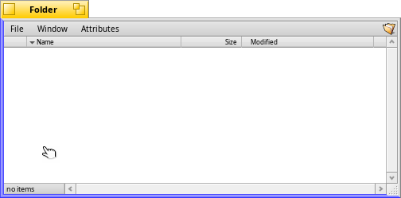

English
EnglishWindow management: Move & Resize
Haiku offers a neat way to quickly move or resize windows:
Holding down CTRL ALT will highlight the window borders nearest to the mouse pointer.
Click and dragging with the right mouse button will resize the window along the highlighted border(s).
Click and drag with the left mouse button to move it around.

Further reading:
A quick way to move or resize windows
A quick way to move or resize windows